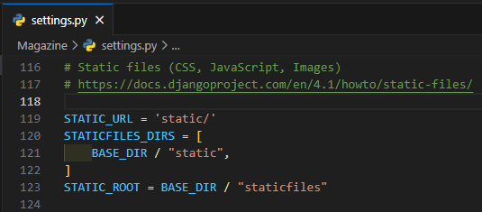

--File--
To upload image, video, and documents you have to follow the following steps
class Files(models.Model):
    document = models.FileField(upload_to='documents/')
    image = models.FileField(upload_to='images/')
    video = models.FileField(upload_to='videos/')
In project root go to settings.py
Add those lines
STATIC_URL = 'static/'
STATICFILES_DIRS = [
    BASE_DIR / "static",
]
STATIC_ROOT = BASE_DIR / "staticfiles"

Last step
In project root go to urls.py
Add those lines
from django.conf.urls.static import static
from django.conf import settings
urlpatterns + static(settings.MEDIA_URL, document_root=settings.MEDIA_ROOT)
